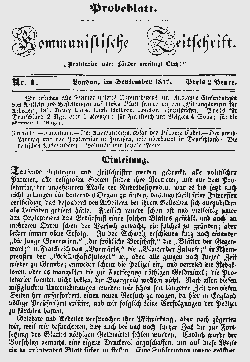
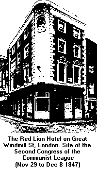

Marx/Engels Internet Archive
A congress of the League of the Just opened in London on June 2, 1847. Engels was in attendence as delegate for the League's Paris communities. (Marx couldn't attend for financial reasons.)
Engels had a significant impact throughout the congress -- which, as it turned out, was really the "inaugural Congress" of what became known as the Communist League. This organization stands as the first international proletarian organization. With the influence of Marx and Engels anti-utopian socialism, the League's motto changed from "All Men are Brothers" to "Working Men of All Countries, Unite!"
Engels: "In the summer of 1847, the first league congress took place in London, at which W. Wolff represented the Brussels and I the Paris communities. At this congress the reorganisation of the League was carried through first of all. ...the League now consisted of communities, circles, leading circles, a central committee and a congress, and henceforth called itself the 'Communist League'."
The Rules were drawn up with the participation of Marx and Engels, examined at the First Congress of the Communist League, and approved at the League's Second Congress in December 1847.
Article 1 of the Rules of the Communist League: "The aim of the league is the overthrow of the bourgeoisie, the rule of the proletariat, the abolition of the old bourgeois society which rests on the antagonism of classes, and the foundation of a new society without classes and without private property."
The first draft of the Communist League Programme was styled as a catechism -- in the form of questions and answers. Essentially, the draft was authored by Engels. The original manuscript is in Engels's hand.
 The League's official paper was to be the Kommunistische Zeitschrift, but the only issue produced was in September 1847 by a resolution of the League's First Congress. It was First Congress prepared by the Central Authority of the Communist League based in London. Karl Schapper was its editor.
The Second Congress of the Communist League was held at the end of November 1847 at London's Red Lion Hotel. Marx attended as delegate of the Brussels Circle. He went to London in the company of Victor Tedesco, member of the Communist League and also a delegate to the Second Congress. Engels again represented the Paris communities. Schapper was elected chairman of the congress, and Engels its secretary.
Friedrich Lessner: "I was working in London then and was a member of the communist Workers' Educational Society at 191 Drury Lane. There, at the end of November and the beginning of December 1847, members of the Central Committee of the Communist League held a congress.  Karl Marx and Frederick Engels came there from Brussels to present their views on modern communism and to speak about the Communists' attitude to the political and workers' movement. The meetings, which, naturally, were held in the evenings, were attended by delegates only... Soon we learned that after long debates, the congress had unanimously backed the principles of Marx and Engels..."
The Rules were officially adopted December 8, 1847.
Engels: "All contradiction and doubt were finally set at rest, the new basic principles were unanimously adopted, and Marx and I were commissioned to draw up the Manifesto." This would, of course, become the Communist Manifesto.
March 31 1846: Weitling letter
May 5 1846: Letter: Marx asks Proudhon to join, Marx
June 1847: Rules of the Communist League, First Draft
June 1847: Circular to Members, First Congress of Communist League
June 1847: Communist Confession of Faith, Engels
September 1847: Report by Central Authority, to the Communist League
November 1847: Principles of Communism, Engels
December 1847: Rules of the Communist League
January 1848: Letter from Engels to Marx, 14th January
February 1848: Communist Manifesto, Marx & Engels
March 1850: Address to the Communist League, Marx & Engels
June 1850: Address to the Communist League, Marx & Engels
October 1885: History of the Communist League, Engels